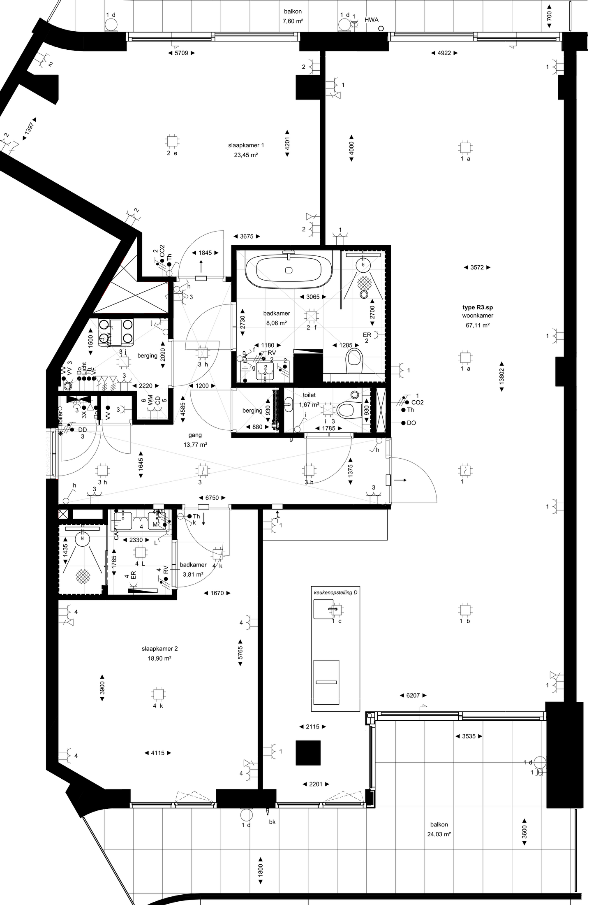

Original PDF (YP_bouwnummer_25.pdf, Type R3.sp)

Rendered from apartment.json
Black: outer envelope (incl. NW zigzag estimate).
Coloured fills: room polygons. Blue numbers: every raw mm callout from the JSON (placed at the position read from the PDF).
Red dot: world origin (0, 0) at the NW corner of the top facade. Grid is 1 m × 1 m.